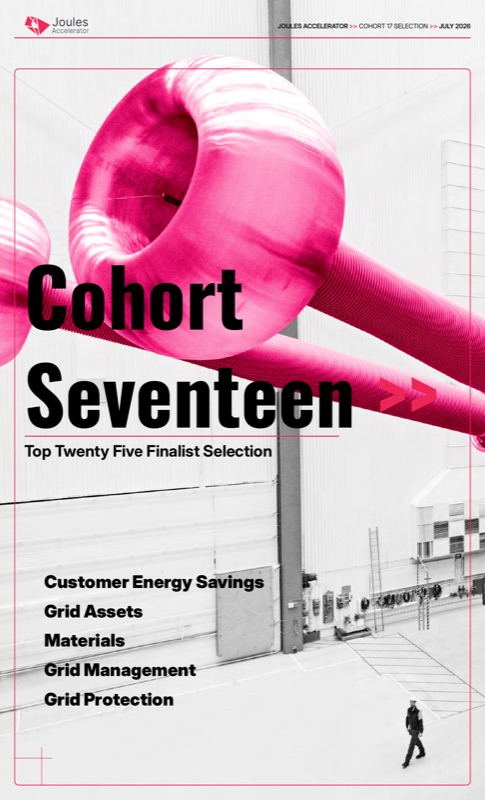

Cohort 17: Top Twenty Five Finalist Selection
A finalist selection book profiling grid-technology startups across customer energy savings, grid assets, materials, grid management, and grid protection.
My contribution: As a Spring 2026 Research Associate, I helped research and assemble this publication as part of the team supporting the Cohort 17 startup search. The research associate team is credited on page 39.